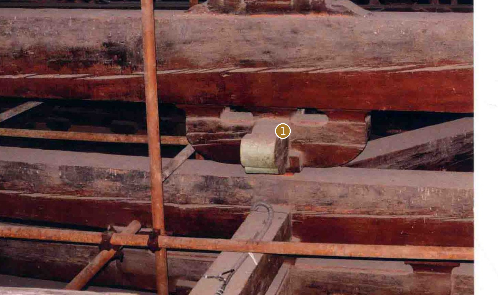
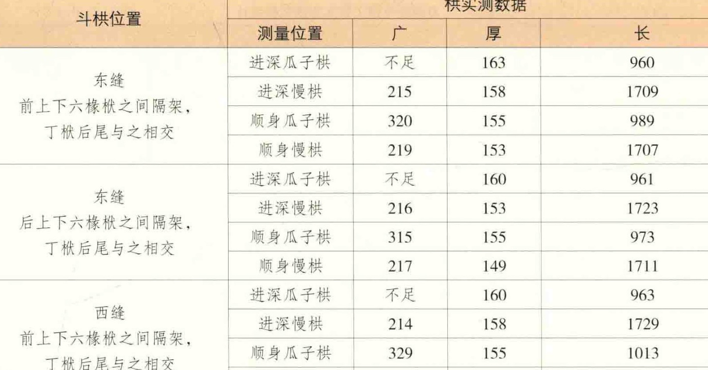
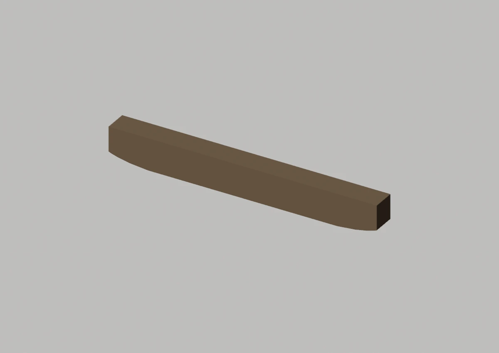
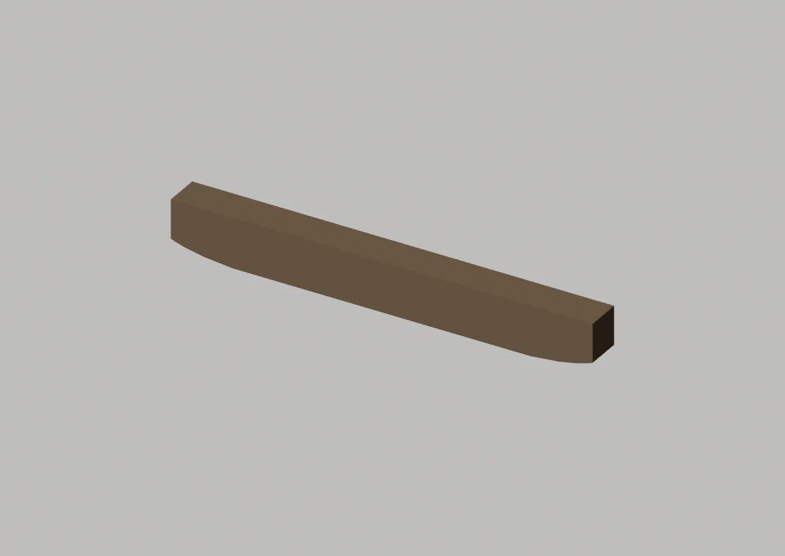
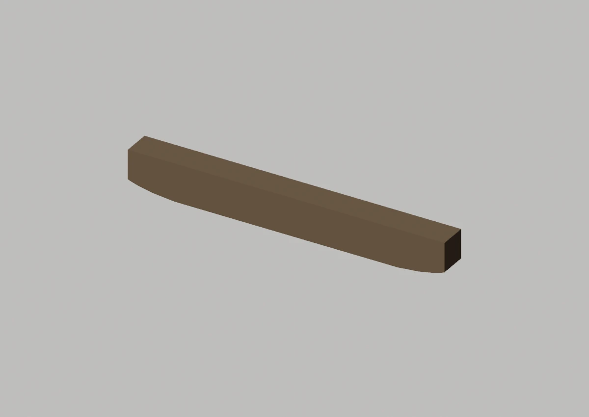
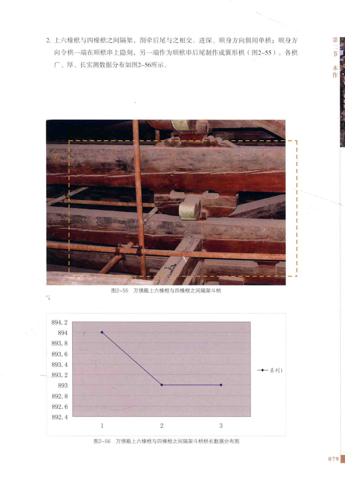

当前只有工作模型中的局部襻间枋
先看形，再看差异

没有可对应的独立模型未以占位长方体、组合图或推测模型代替。
未找到独立批准Master
定性对照：两侧未做比例归一或像素叠加。橙色虚框只表示原图查找范围。
02 / 形态细节
其他角度、截面与现有局部版本


现有局部工作模型 · 与 Master 分开看



03 / 原图与位置
目标在原始资料的哪里


安装位置与复用
东缝前下平槫下；东缝后下平槫下；西缝前下平槫下；西缝后下平槫下；东山南下平槫下；东山北下平槫下；西山南下平槫下；西山北下平槫下；东缝前上平槫下；东缝后上平槫下；西缝前上平槫下；西缝后上平槫下
变体：沿用现行登记口径
Master：无独立批准Master
对应实例范围（12条登记记录，不是物理件数）
- 襻间枋-01 · 东缝前下平槫下
- 襻间枋-02 · 东缝后下平槫下
- 襻间枋-03 · 西缝前下平槫下
- 襻间枋-04 · 西缝后下平槫下
- 襻间枋-05 · 东山南下平槫下
- 襻间枋-06 · 东山北下平槫下
- 襻间枋-07 · 西山南下平槫下
- 襻间枋-08 · 西山北下平槫下
- 襻间枋-09 · 东缝前上平槫下
- 襻间枋-10 · 东缝后上平槫下
- 襻间枋-11 · 西缝前上平槫下
- 襻间枋-12 · 西缝后上平槫下
04 / 证据与边界
出处、模型身份与未知部分
仍然未知：照片有多根叠置长材，框选局部不代表已分离整根襻间枋。
原工程记录（按原文保留）：不能把内槽栱件215.0×153.6mm统计作为襻间枋统一截面；独立完整形态和逐件模型未建立。
资料出处
A1 · PDF第94页 / 印刷第79页 · 归档原图 A1-p094.jpg
A1 · PDF第345页 / 印刷第330页 · 归档原图 A1-p345.jpg


模型原始渲染、网格身份与批准范围
east:PANJIAN_FANG_FRONT main工作V003：含局部批准和待审对象；此图不升级批准。

east:PANJIAN_FANG_REAR main工作V003：含局部批准和待审对象；此图不升级批准。

west:PANJIAN_FANG_FRONT main工作V003：含局部批准和待审对象；此图不升级批准。

west:PANJIAN_FANG_REAR main工作V003：含局部批准和待审对象；此图不升级批准。

A1、A2、A3共享测绘数据脉络，不作为三次独立复测。官方展示只作形态参考；推断、遮挡与未知不升级为实测事实。